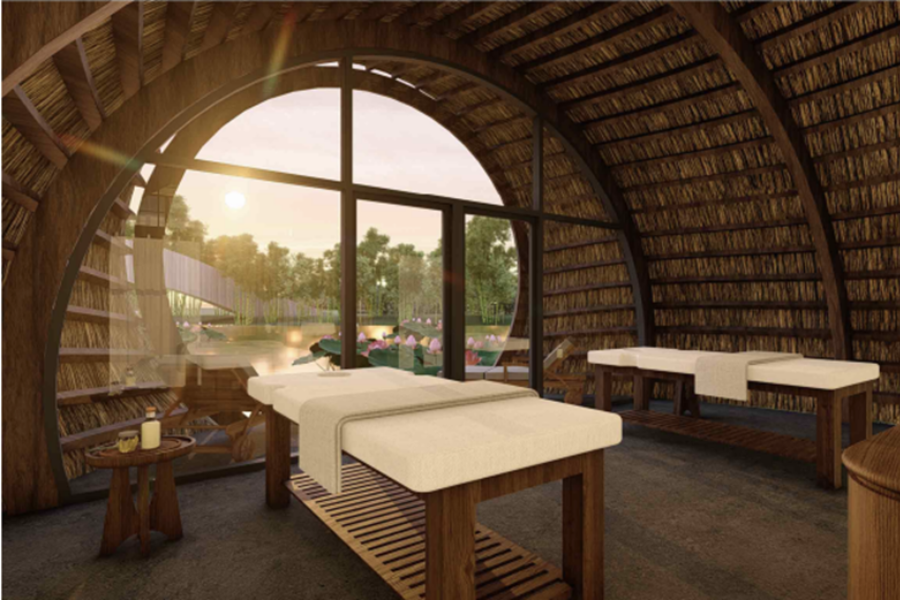
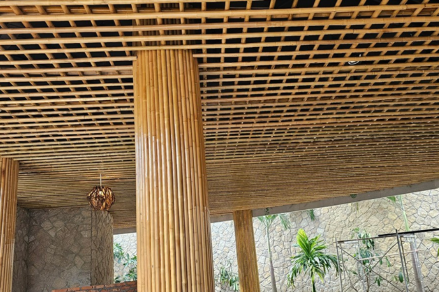
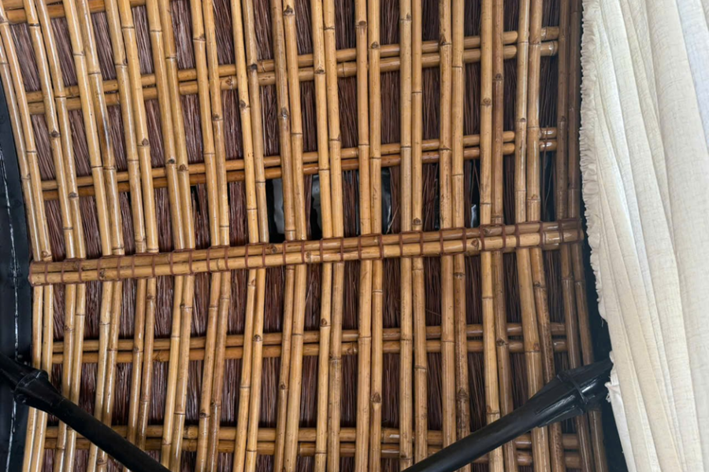

Trong nhịp sống hiện đại, con người ngày càng có xu hướng muốn tìm về với những thứ bình dị, giản đơn. Và điều đó được thể hiện rõ nét qua phong cách thiết kế kiến trúc đương thời.
Tre tầm vông – Mộc mạc nhưng không hề đơn điệu, chắc khỏe nhưng lại đầy chất thơ. Vật liệu đang dần hồi sinh trong vai trò trang trí nội – ngoại thất. Tre không đơn thuần chỉ là làm đẹp cho không gian sống, mà còn giúp gợi mở cảm xúc và viết nên những câu chuyện đầy ý nghĩa. Vậy, vì sao nên lựa chọn ốp tre tầm vông cho không gian của bạn? Cùng theo dõi bài viết này, Tre Việt Building sẽ giải đáp chi tiết nhé.
Vì sao nên chọn ốp tre tầm vông cho không gian của bạn?

Mang lại vẻ đẹp tự nhiên
Mỗi một cây tre tầm vông đều mang một nét đẹp vô cùng riêng biệt, từ đường vân tre, mắt tre cho đến sắc màu tự nhiên sau khi qua xử lý hun khói và sấy nhiệt. Ốp tre tầm vông lên trần hay vách sẽ mang đến hiệu ứng thị giác vô cùng đặc biệt và thu hút. Nó vừa ấm áp, vừa mềm mại, lại vừa có chiều sâu trong tổng thể không gian kiến trúc. Chẳng cần sơn vẽ hay họa tiết hoa văn cầu kỳ, tre tự tỏa sắc bằng chính vẻ đẹp tự nhiên, nguyên bản.
Chống mối mọt và bền vững theo năm tháng
Tre tầm vông sau khi xử lý sẽ đạt được độ cứng cao, tăng cường khả năng chống cong vênh, nứt nẻ và đặc biệt là kháng mối mọt vô cùng hiệu quả. Nhờ vậy nên dù sử dụng tre tầm vông trong nhà hay ngoài trời đi nữa thì vật liệu vẫn giữ được chất lượng bền bỉ, ổn định trong suốt thời gian dài.
Thân thiện với môi trường
Tre là vật liệu sinh học có tốc độ phát triển, sinh trưởng nhanh, có khả năng tái tạo và gần như không gây hại đến hệ sinh thái, môi trường. Và trong bối cảnh các công trình đang ngày càng hướng đến tiêu chuẩn “sống xanh”, “bền vững” thì ốp tre tầm vông không đơn thuần chỉ còn là một lựa chọn về vật liệu thiết kế, mà còn là sự cam kết của gia chủ đối với môi trường và sức khỏe con người.
Quy trình thi công ốp tre tầm vông tại Tre Việt Building

Tại Tre Việt Building, quy trình thi công ốp tre tầm vông được triển khai bài bản, chuyên nghiệp, từ khâu tuyển chọn nguyên liệu cho đến bước lắp đặt và hoàn thiện. Cụ thể:
- Chọn lọc tre tầm vông: Đội ngũ nhân công lành nghề, giàu chuyên môn, kinh nghiệm của chúng tôi sẽ tiến hành tuyển chọn những cây tre chất lượng nhất. Tre tầm vông đảm bảo đạt tuổi khai thác, thẳng, không nứt nẻ hay sâu mọt.
- Xử lý tre tầm vông: Tầm vông sẽ được tiến hành ngâm, sấy, hun khói và phủ lớp bảo vệ để nhằm nâng cao tuổi thọ cũng như giữ độ bền màu tự nhiên vốn có.
- Thiết kế phối cảnh 3D: Bước này sẽ giúp cho khách hàng của Tre Việt Building có được cái nhìn khách quan, tổng thể về công trình trước khi thực hiện thi công.
- Lắp đặt và hoàn thiện: Đội ngũ nhân viên sẽ tiến hành xây dựng, tỉ mỉ từng chi tiết để đảm bảo tính thẩm mỹ và độ chính xác cao cho công trình.
- Bảo hành: Tre Việt Building cam kết bảo hành công trình theo chính sách rõ ràng, hỗ trợ khắc phục nếu có phát sinh lỗi kỹ thuật trong quá trình sử dụng. Song, bên cạnh đó, chúng tôi cũng sẽ tư vấn quý khách hàng về cách bảo dưỡng định kỳ nhằm duy trì chất lượng và vẻ đẹp của công trình theo thời gian.
Tre Việt Building – Đơn vị thi công ốp tre tầm vông chất lượng, uy tín
Là một trong những đơn vị tiên phong, đi đầu trong lĩnh vực thi công tre trúc, Tre Việt Building – Tự hào mang đến giải pháp ốp tre tầm vông đẹp, bền vững, an toàn và chất lượng.
Tre Việt Building hiểu rằng, mỗi một không gian đều mang một nét cá tính và mỗi một mét vuông ốp tre cần phải thể hiện được nét hài hòa giữa tính thẩm mỹ, công năng cùng độ bền lâu dài. Đó chính là lý do vì sao chúng tôi luôn đầu tư bài bản, tâm huyết từ tất cả mọi khâu, từ bắt đầu đến khi kết thúc.
Vậy, khi lựa chọn dịch vụ thi công ốp tre tầm vông tại Tre Việt Building, bạn sẽ nhận được những gì?
- Vật liệu tre được tuyển chọn công phu, kỹ lưỡng
- Thiết kế độc đáo, riêng biệt, sáng tạo theo từng không gian, thỏa mãn từng mong muốn của khách hàng
- Đội ngũ thi công giàu chuyên môn, kinh nghiệm, lành nghề
- Thực hiện thi công với tiến độ nhanh chóng và chính sách bảo hành rõ ràng
Và với kinh nghiệm đồng hành cùng hàng loạt công trình quán cà phê, homestay, spa, resort, khu nghỉ dưỡng, khu biệt thự, chúng tôi cam kết mang đến cho quý khách hàng trải nghiệm hài lòng tuyệt đối!
Vậy còn chần chờ gì nữa, hãy liên hệ ngay hôm nay để được tư vấn mức giá dịch vụ ưu đãi nhất, bạn nhé!
Thông tin liên hệ:
CÔNG TY TRÁCH NHIỆM HỮU HẠN TRE VIỆT BUILDING
Địa chỉ: 917 Phạm Văn Đồng, Phường Linh Xuân, Thành phố Hồ Chí Minh
Nhà máy sản xuất: Phú Hợp B, Xã Phú Lâm, Đồng Nai.
Website: tretruc.com.vn
Điện thoại – Zalo: 087.6915.999
Email: info@treviet.com.vn
treviet23@gmail.com
Xem thêm: Ốp trúc – Giải pháp tự nhiên cho không gian kiến trúc hiện đại